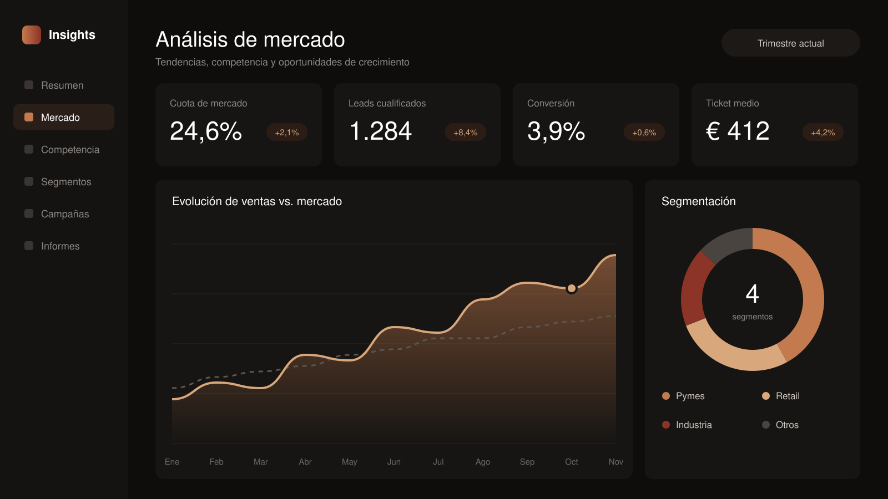
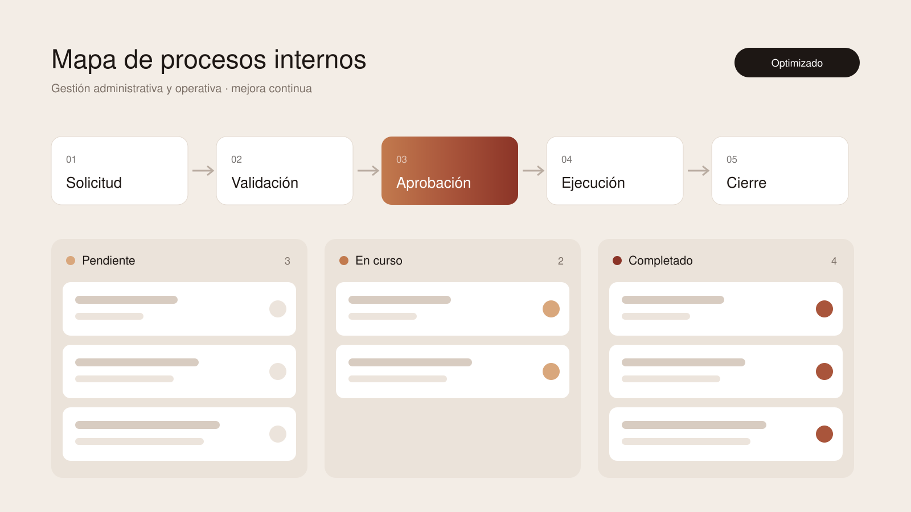
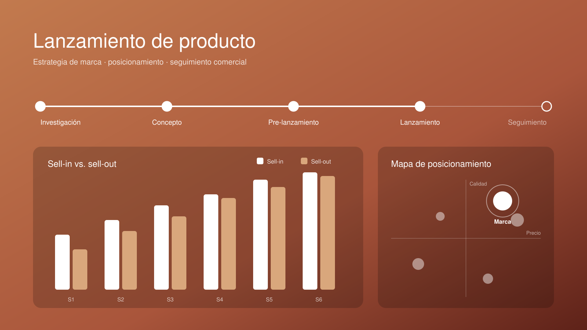
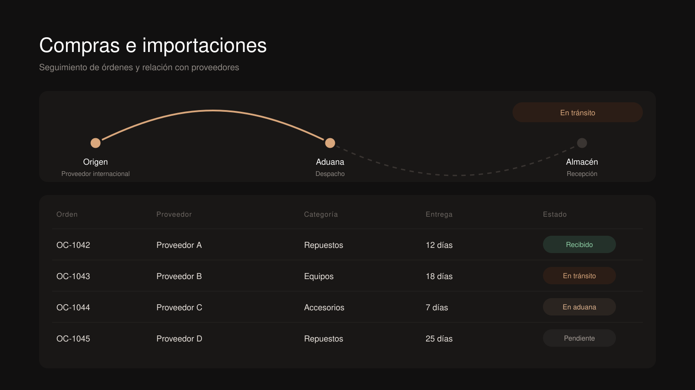

Decisiones basadas en datos
Transformo ventas, campañas y KPIs en informes claros con Power BI y Excel, para que cada decisión estratégica tenga respaldo.




MBA & Máster enMarketing
Business & MarketingSpecialist
Visión de negocio con foco en resultados
Transformo ventas, campañas y KPIs en informes claros con Power BI y Excel, para que cada decisión estratégica tenga respaldo.
Experiencia en marketing, área comercial, operaciones y compras internacionales: entiendo cómo se conecta cada área y dónde está la oportunidad.
Perfil analítico, organizado y orientado a resultados. Planifico, ejecuto y hago seguimiento, en remoto o integrada en equipos multidisciplinares.
Combino análisis de negocio, marketing y gestión operativa para ayudar a las empresas a crecer con orden. Desde entender el mercado y la competencia hasta medir cada campaña y optimizar los procesos internos, mi enfoque aporta claridad, control y resultados medibles.
Soy administradora de empresas y negociante internacional, con un MBA y un Máster en Dirección Comercial y Marketing. Ayudo a las empresas a tomar mejores decisiones combinando análisis de mercado, seguimiento de KPIs, estrategia de marketing y gestión operativa de principio a fin.
Trabajo principalmente con Power BI y Excel para el análisis de datos, la creación de dashboards y el seguimiento de ventas (sell in / sell out), además de herramientas de investigación de mercados y de gestión de proyectos.
Ambas. Vivo en España y tengo experiencia trabajando en remoto y colaborando con equipos multidisciplinares, tanto en proyectos puntuales como en posiciones de largo plazo.
Castellano nativo e inglés intermedio (B1), con buena comprensión lectora y comunicación escrita para trabajar con proveedores y equipos internacionales.
Escríbeme desde el botón «Contáctame» o por LinkedIn. Concertamos una primera llamada para entender tus objetivos y te propongo cómo puedo aportar valor a tu equipo o proyecto.